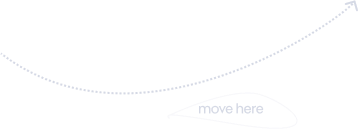

Project 4 (My Most Recent Project)
The Problem
At the start it looked like a confusing idea for me and had I not worked for an organization, I wouldn’t have done it. It sounded like too much in one and that the client wasn’t willing to test or follow any ux practices. He just wanted his beautiful idea to come to life. I had no choice but to begin researching the scope of the idea. Eventually, out of all the ideas discussed in the PRD, I had come to a conclusion that the main idea was just the shipping/local delivery idea. The rest were secondary to this.
My Role
As the only designer on this project for a Nigerian startup, I was going to play every role. The researcher, interaction designer and visual designer.
I embraced the challenge and because I still didn’t enjoy doing the project, I promised I was not going to waste time on it.
And would get it done in 1 to 2 weeks.
So I began...
How I Began
I started by reading through every line of the PRD. Fully digesting it over and looking for the problem the business wanted to solve.
While I thought through, I asked questions in every standup meeting on areas I didn’t fully understood, sent more doubts to the team’s group until I got a full clarification on the direction the project should take.

...
The conclusion I made was that the business was centered around two things:
Creating a delivery nexus around Nigeria, UK and USA.
Local delivery alone in Nigeria and int’l from US to UK and UK to Nigeria.
One advantage it might have with this is that most delivery service only focus on the local delivery part and not int’l deliveries.
Asides it wasn’t really new.
So my question was how did they want to be different asides adding an int’l delivery to themselves. The answer was in the second conclusion.
Gamifying the delivery experience. Users could play quick games to earn points that they could convert to cash which could subsidize the amount they spend on delivery.
After some competititve analysis, the following was what I came up with.
User Persona
The emotional and user representing DPhi’s current and prospective niche market
Fig. 5.0
Information Architecture
The grouping of the findings from users
Fig. 5.1
How I Simplified The Complexity
The idea was a chaos at start like I said. It wasn’t impossible to do or difficult to execute even at that level of chaos. It just wasn’t fun for me.
Notwithstanding, I like being the solution finder, so I had to find a way to make the complexity simple enough to follow through.
So I decided to keep the primary vision, which is shipping, as the first thing a user sees when he logs into the application. Then what relates to him shipping easy next on a seperate module, the wallet feature.
There on, what could help him bolster his earnings, the game feature next to the wallet as a seperate feature.
The secondary features like event/gallery and the knowledge base were added to the more feature because they weren’t the idea of the application.
Why I changed the design
I ran a usability test with 3 users and all seemed to have a non-verbal criticism of the aesthetics.
But not so much with the functionalities, so I had to quickly change it.
So, I defined a new style guide and re-created the exisiting designs for a better visual appeal.
The New Reaction
On the second test on the same users and a new user, they all had a better view of the aesthetics. So, I continued on that path.
At this point, the client re-iterated the need for adding e-commerce which will lead to a third party site.
Considering it being in the same family of shipping, I decided to make it visible when the user first arrives on the application after they have logged in.
Conclusion of the Business Landing Page
The project was completed swiftly and I decided to move on quickly from it.
In the end, the client liked it and was even saw the whole idea better than he did from the start.
I learnt not to waste time in deliberating on what I do not like but to approach it the best I can.
Our Fifth Meeting
The fifth meeting was scheduled to present the high-fidelity designs before it was handed off to developers.
I had shared my rationale across most of the pages, as they were so much.
My first design maybe, I had to over impress with catering for all states, how they’d look .
I enjoyed it that’s what matters.
Action point was to provide assets to developers.
Learnings
I learnt about screen sizes and design scalability.
Testing designs across several screens and ensuring they all look good across several screens.
I learnt about involving developers early on and ensuring they give feedback much early.
I also learnt about documenting designs as I had to go back and forth explaining what each designs did as developers were developing it.
I also learnt about arranging the files better, using components etc.
Previous Project | Dphi Landing Pages
Previous Project | Dphi Assessment Page
Previous Project | Churchvest
 back to previous
back to previous